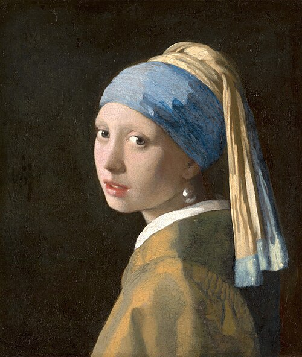
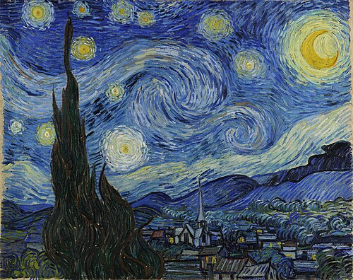

9:41
Hikâyeler
6:50 / 19:00
Sanat tarihi yolu
Yolculuk

Tamamlandı
Karanlıktan Fırlayan Işık
Roma ve Napoli · 6 durak

Sıradaki durak
Delft’in Sessiz Penceresi
Hollanda · 5 durak

Yaklaşan
Güneyin Yakıcı Sarıları
Arles ve Auvers · 6 durak